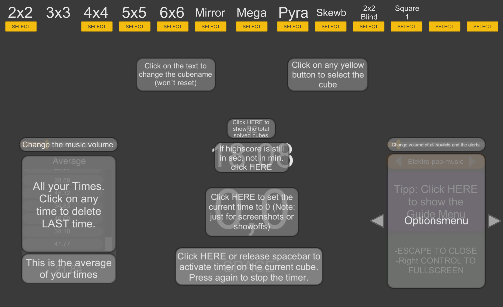
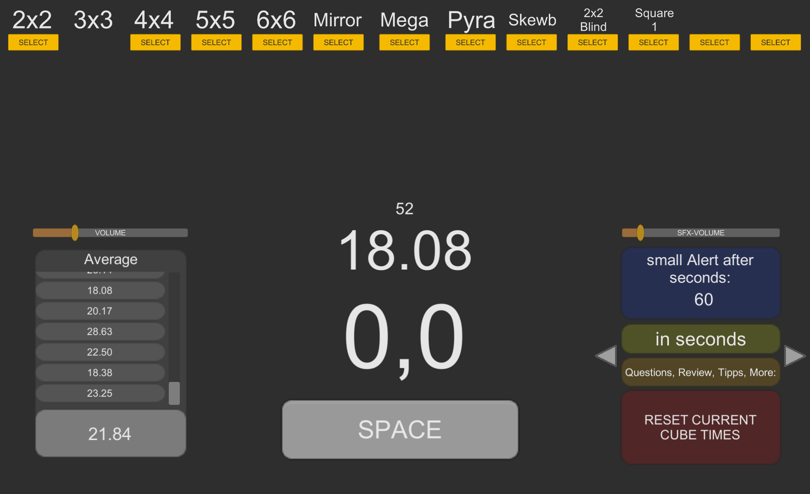

CubeTimer

Description
This is a Cube timer for all those hard-working cubers that want to improve their times on any Cube. It tracks and saves your times up to 13 cubes. If you are training for competitions, then these features might be helpful:
- Inspection time: It is a small countdown of x seconds, what limits the time you inspect the cube.
- Music: There are more than 10 music tracks you can listen to while cubing.
- Alert: While doing big cubes, you can setup a small Alert sound after x seconds.
- Random Scrambles: A randomized scramble will be generated, if you are too lazy to think or just want new scrambles.
- Dark/Light theme: Supports both dark and light mode.

Download
The recommended resolution is 1920x1080. Any Windows computer can run this app smoothly.
If you have problems or want to give me feedback, feel free to contact me at purpurax@gmx.de
© Made by Purpurax